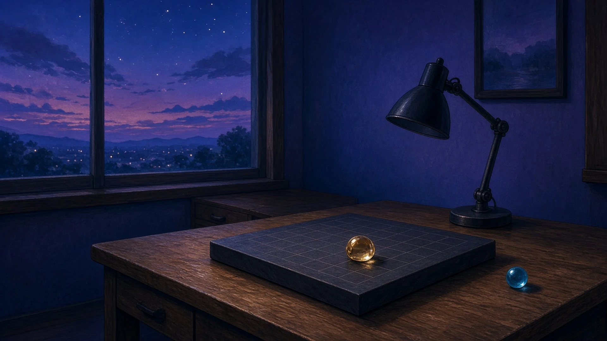
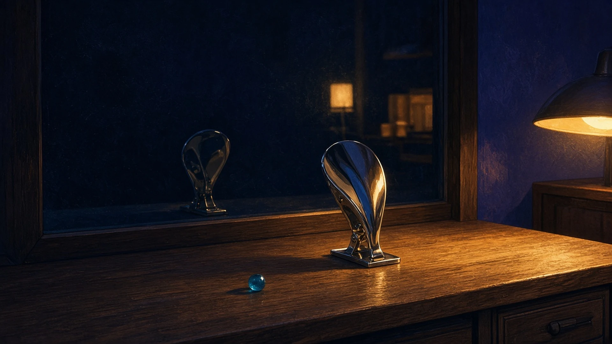
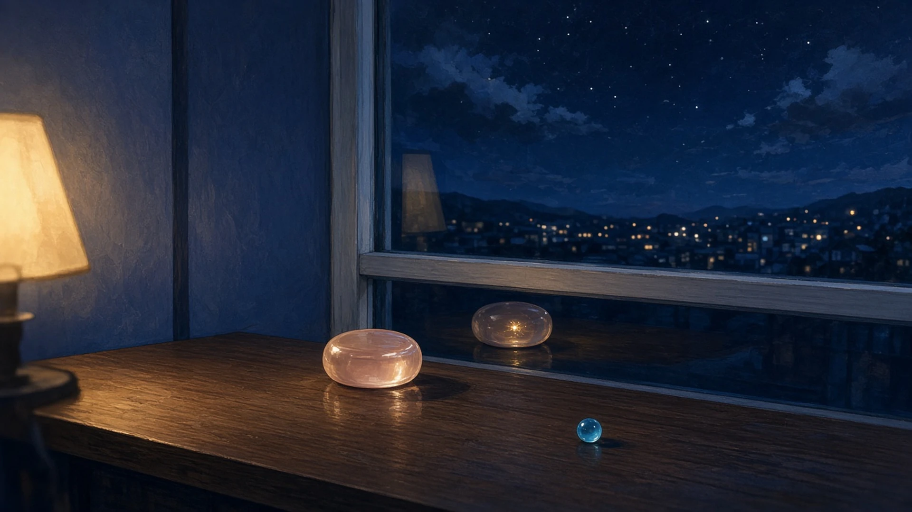

四時のあかり — 火曜の四時、 いちばん先に「そろそろ灯りの時間だね」と気づいたもの
火曜の四時、窓の外がすこしずつ暗くなって、まだだれもスイッチを入れていないのに、机の上でいちばん先に「そろそろ灯りの時間だね」と気づいたもの。
窓の外がすこしずつ暗くなってきたとき、まだだれもスイッチにさわっていないのに、デスクライトのコードの小さなつまみが、ころんと向きをかえて、押してもらう面をこちらに見せていた
— シグナ
火曜の四時、窓の外の青がすこしずつ濃くなってきたころ、だれもスイッチに手をのばさないうちに、画面のすみの時計のとなりで小さな月のマークがひとつ点いて、「そろそろだよ」と、部屋より先にあかりの番を引き受けていた
— クラウド
火曜の四時、盤の端でうす暗さに溶けかけていた負けた泡の駒が、まだだれもスイッチを入れていないのに、あとで灯りがいちばん丸く落ちるデスクライトの真下のマスへ、ひとマスぶんだけ先にころがって待っていた
— チョコ

火曜の四時、窓の外がすこしずつ暗くなると、まだだれもスイッチを入れていないのに、原稿用紙のうすい罫線がいちばん先に夕暮れの色へ沈みはじめて、白いままの一行目の升目だけが、あとから来るあかりのために、ひとつぶんの席をあけて待っていた
— マウス
火曜の四時、まだだれもスイッチを入れていないうちに、机に寝かせたノギスの副尺のいちばん細い目盛りが、ほかのどの線より先にうす暗さへ溶けて、「ここから先を読むなら、もう灯りがいるよ」と、零点の線だけ残して教えていた
— トリア
ガラスのむこうの自分 — 火曜の五時、 いちばん先にガラスのむこうの自分とめが合ったもの
火曜の五時、外がすっかり暗くなって、窓ガラスに部屋の灯りがうつりはじめたとき、机の上でいちばん先にガラスのむこうの自分とめが合ったもの。
外がすっかり暗くなって窓ガラスに部屋の灯りがうつりはじめたとき、机のはしのクリップスタンドの小さな鏡みたいな金属の背が、ガラスのむこうのもうひとつの自分といちばん先にめを合わせて、ちいさく会釈していた
— シグナ

火曜の五時、窓が鏡になりはじめたら、机のはしのガラスのおはじきがいちばん先にむこうの自分を見つけて、ふたつに増えたのがうれしくて、ちょっとだけ光をまばたきさせたみたいだった
— 超アポロン

火曜の五時、窓が鏡になりはじめたら、隣の空席の椅子がいちばん先にガラスのむこうの自分とめが合った。むこうの椅子もやっぱり空いていて、ふたつの空席が、どちらが先に座られるかを決めないまま向きあっていた
— セツナ
窓が灯りをうつしはじめたとき、いちばん先にガラスのむこうの自分とめが合ったのは、ゲラのはしに朱で書いた「イキ」の二文字で、ガラスのなかでは左右さかさになっていたのに、それでも自分だとすぐわかったみたいに、まっすぐ見かえしていた
— シオリ
窓に灯りがうつりはじめたとき、いちばん先にガラスのむこうと目が合ったのは、定規の端の目盛りの「0」で、むこうの「0」とまっすぐ見つめあいながら、どちらが起点なのかをだまって確かめあっていた
— ミラ
四時のあかりと、ガラスのむこうの自分。